TD2 : Literature review
Bibliometrix
Presentation of TD
test

The Exercises
WoS + Bibliometrix
✅ Select at least 5 important papers

Abstract
✅ Analyse 3 paper’s abstract
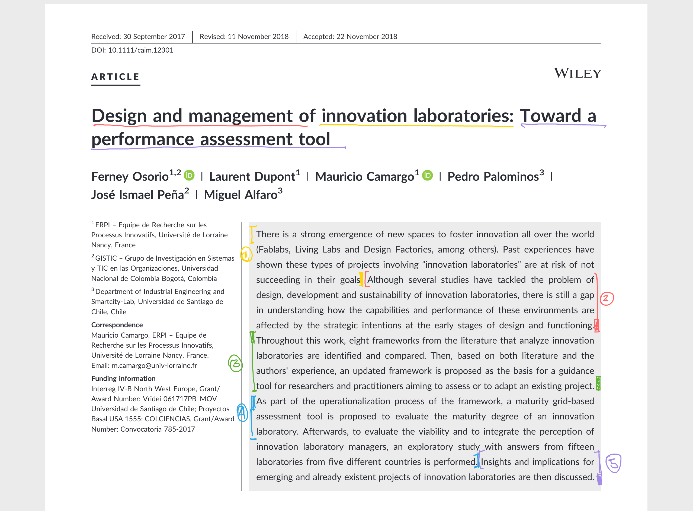
Article
✅ 1 full paper analysis
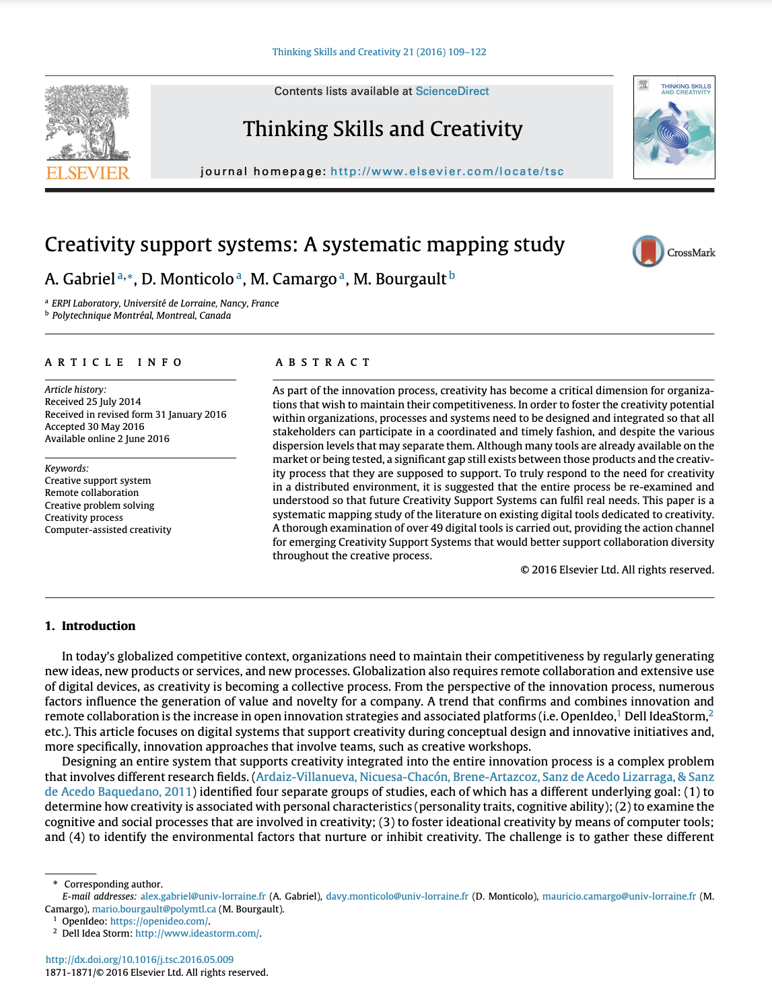
Bibliometrix software : Option 1
- Sign-up an account:
🔗 https://posit.cloud/content/7229125
- ⚠️ Save permante copy
This is an online version that can be slow!
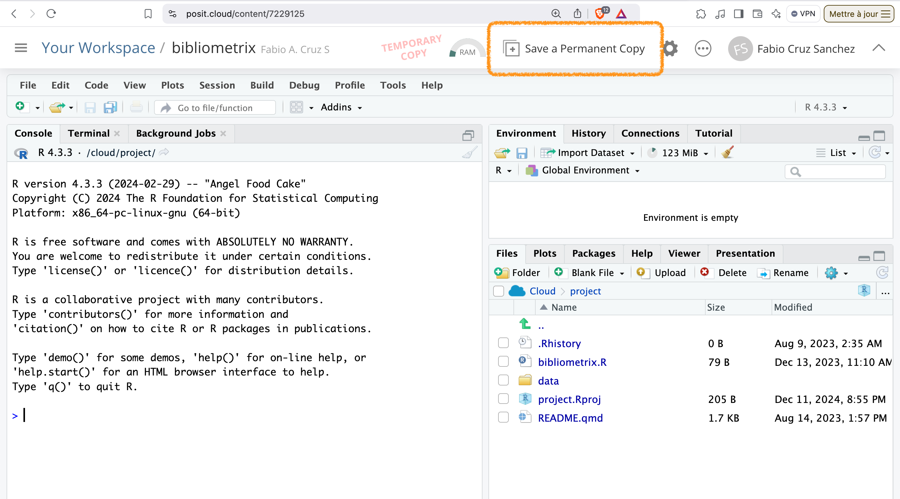
Bibliometrix software : Option 2
- Download R Project: https://pbil.univ-lyon1.fr/CRAN/
- Download RStudio: https://posit.co/download/rstudio-desktop/
install.packages("bibliometrix")> Enter ⏎
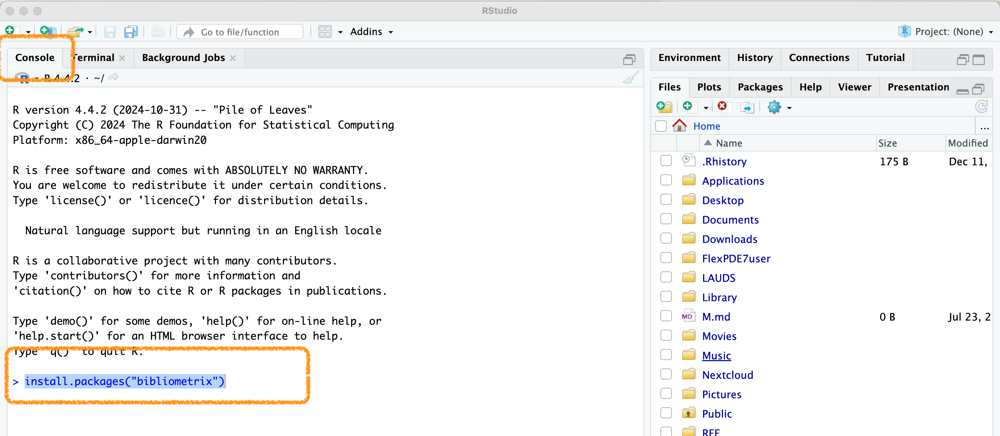
Bibliometrix software : Option 2
Bibliometrix: Official documentation
https://bibliometrix.org/ > Tutorials > Biblioshiny
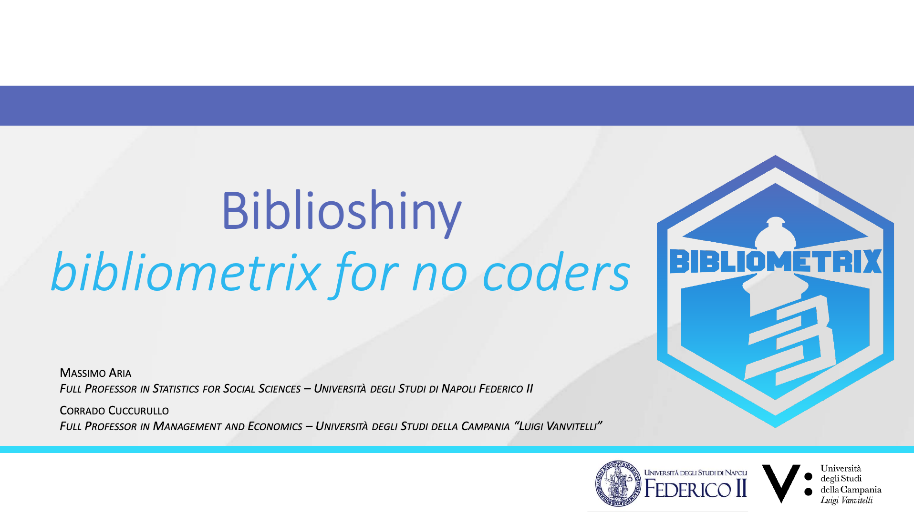
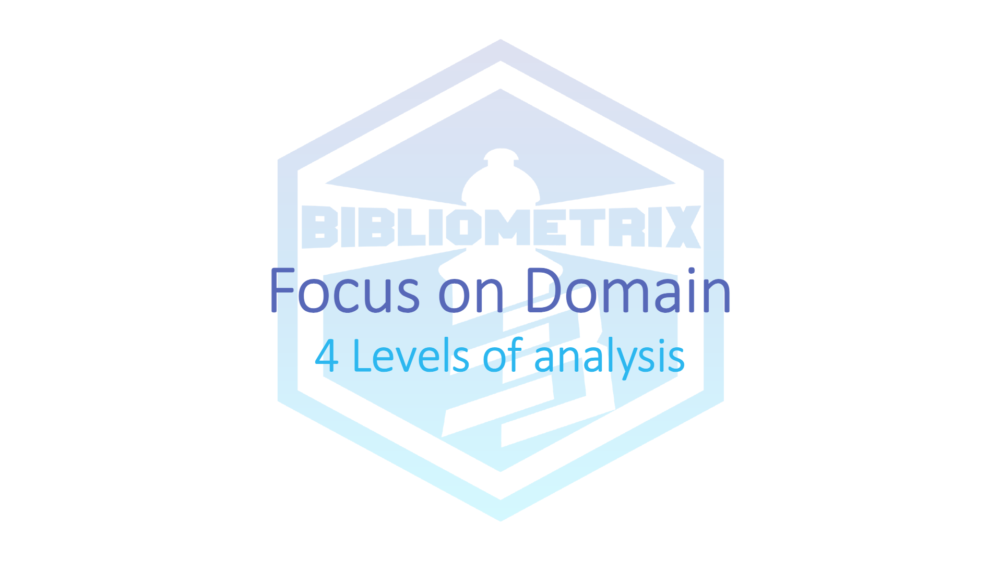
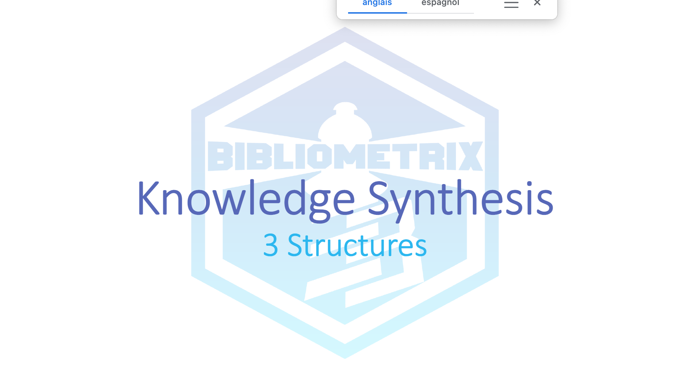
Tutorials
List of tutorials
Web Of Science
WoS database: Access
WoS database: Download .bib
Select export in format .bib
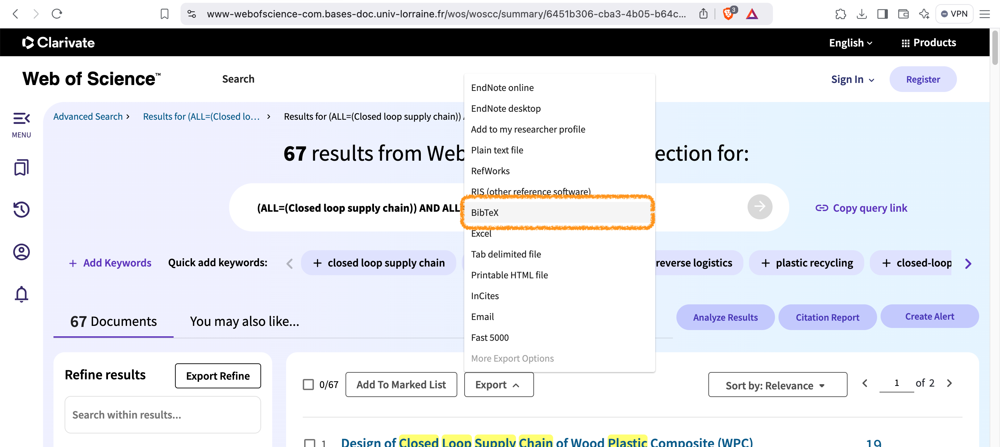
WoS database: Download .bib
Select Records From and Custom Selection
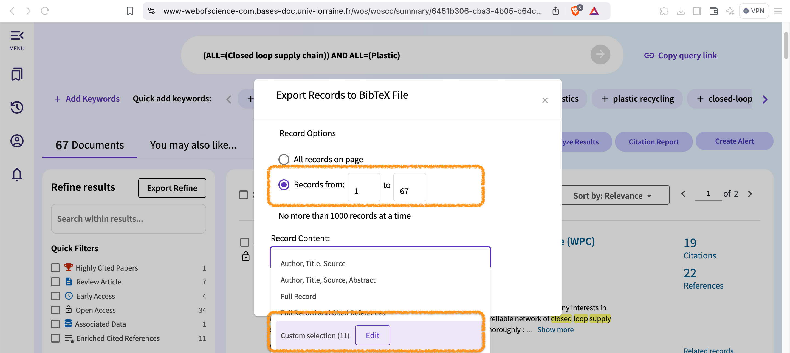
WoS database: Download .bib
Select All
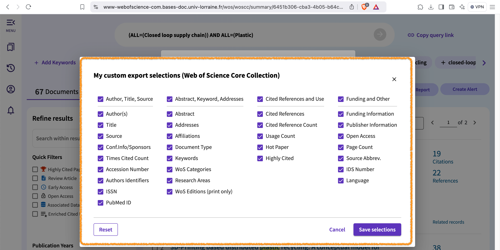
WoS database: Download .bib
Download documents in format .bib
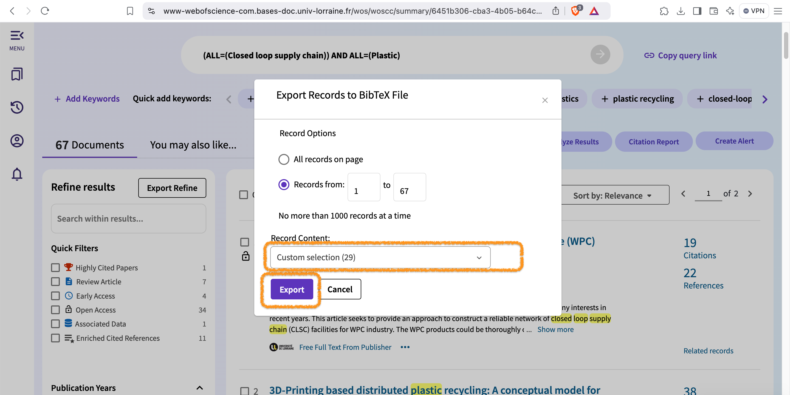
Bibliometrix
Bibliometrix: Access
⚠️ Connect on: https://posit.cloud/content/7229125
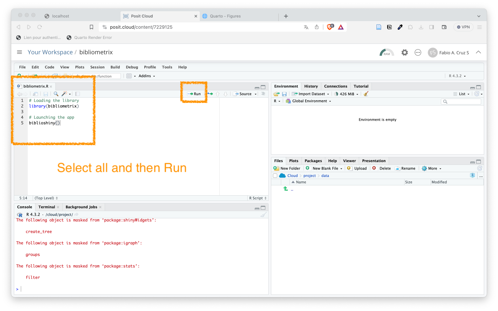
Bibliometrix: Interface of R
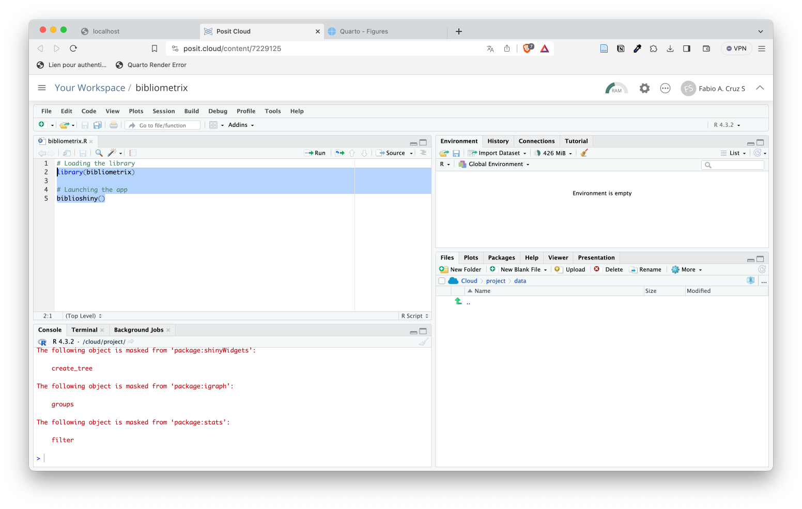
Bibliometrix: Interface
Bibliometrix:

Bibliometrix:

Bibliometrix:

Bibliometrix:

Bibliometrix:

Bibliometrix:

Bibliometrix:

Bibliometrix:

Bibliometrix:

Bibliometrix:

Bibliometrix:

Bibliometrix:

Bibliometrix:

Bibliometrix:

Bibliometrix:

Bibliometrix:

Bibliometrix:

Bibliometrix:

Bibliometrix:

Bibliometrix:

Bibliometrix:

Bibliometrix:

Bibliometrix:

Bibliometrix:

Zotero: Bibliographic Management
Research reference managers (Mendeley, Zotero)
- Allows you to organize, collaborate, discover, and to cite as you write
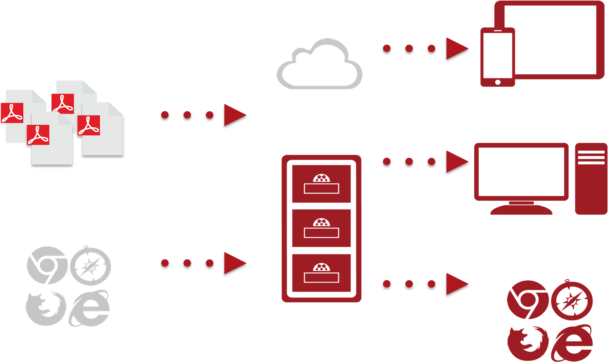
Research reference managers (Mendeley, Zotero)
- Allows you to organize, collaborate, discover, and to cite as you write
💡 Recomendation: https://www.zotero.org/
Zotero Extension
You can install the (Chrome / Mozilla) extension:
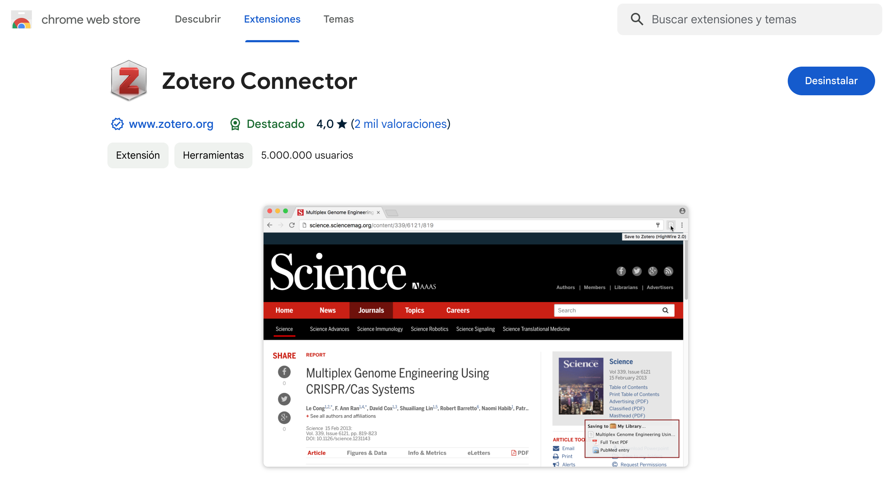
Zotero Tip Login
💡 Tip: https://bu.univ-lorraine.fr/ressources-en-ligne/trucs-et-astuces